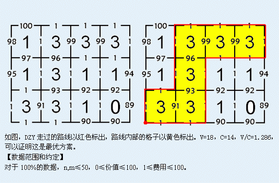

DZY家的后院有一块地，由N行M列的方格组成，格子内种的菜有一定的价值，并且每一条单位长度的格线有一定的费用。
DZY喜欢在地里散步。他总是从任意一个格点出发，沿着格线行走直到回到出发点，且在行走途中不允许与已走过的路线有任何相交或触碰（出发点除外）。记这条封闭路线内部的格子总价值为V，路线上的费用总和为C，DZY想知道V/C的最大值是多少。
| F.A.Qs | Home | Discuss | ProblemSet | Status | Ranklist | Contest | 入门OJ | ModifyUser Xeonacid | Logout | 捐赠本站 |
|---|
